The two-dimensional flow of a free surface down an inclined plane is a simple exact solution of the Navier–Stokes equations. We describe two different ways of solving the problem using either spines or a pseudo-elastic method to define the bulk mesh motion. Reassuringly, the results are the same irrespective of the method chosen.
Problem formulation

Formulating the problem in coordinates tangential ( 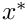) and normal ( 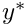) to the plane and assuming that the flow is steady and only in the tangential direction, but independent of the tangential coordinate, reduces the momentum equations to
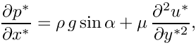
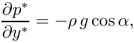
where 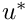 is the velocity component tangential to the plane and  is the fluid pressure. Note that the continuity equation is automatically satisfied.
is the fluid pressure. Note that the continuity equation is automatically satisfied.
We non-dimensionalise using the only length-scale in the problem 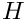, choosing the viscous scale for the pressure and choosing a reference velocity scale 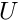:
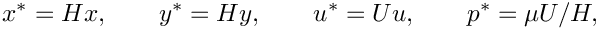
and the governing equations become
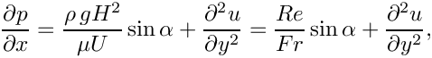
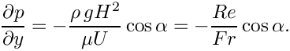
The dimensionless grouping 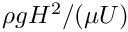 represents the ratio of gravitational forces to viscous forces and we choose to identify it as a Reynolds number 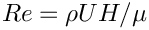 divided by a Froude number 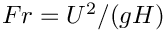.
We proceed by assuming that the flow is driven entirely by the gravitational body force and that there is no additional tangential pressure gradient. Then, integrating the tangential momentum balance twice and using the boundary conditions of no-slip at the plane (  )and that the free surface ( 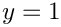) is tangentially stress-free gives
)and that the free surface ( 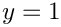) is tangentially stress-free gives
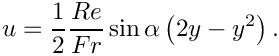
Integrating the normal momentum balance and setting the reference external pressure to be zero at the free surface gives
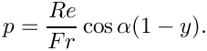
Finally, we specify a "natural" velocity scale by setting 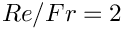, corresponding to the velocity of the free-surface for a vertical film ( 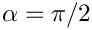).
We shall assess the stability of the flat-film solution by applying a small, short-duration perturbation to the wall velocity and evolving the system in time. If the interface is stable, the perturbation should decay, if not it should grow. A linear stability analysis for this problem was performed by Benjamin (1957) and Yih (1963), who both found that for long waves in the absence of surface tension, the interface was unstable when
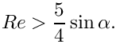
(If you read the papers you will see that the Reynolds number was defined such that the average fluid downslope velocity was one; to convert to our Reynolds number, we must multiply by 3/2.)
The figure below shows the time evolution of the interface on a slope of 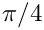 for Reynolds numbers of zero (red line) and 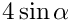 (green line). The perturbation wavenumber is 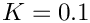 and the interface rapidly develops waves that grow as they are convected downslope for the higher Reynolds number, but decay when  .
.
The decay rate of the interfacial perturbation at is slow, but can be seen in the next figure, which shows the height of the interface at the downstream end of the domain plotted against time. The domain is chosen so that it will contain three waves and the decay or growth of successive crests and troughs can be seen.

A note on the boundary conditions
Resolving the above analytic solution in a finite computational domain requires some thought about boundary conditions. We are only ever free to set one pressure value and setting the external pressure to zero fixes the pressure within the fluid. The boundary conditions at the plane are those of no-slip and at the free-surface the usual dynamic and kinematic conditions apply. Nonetheless, we have a number of possibilities for the boundary conditions at the "artificial" upstream and downstream computational boundaries.
- Prescribe periodic boundary conditions.
- Prescribe the velocity profile as a Dirichlet condition at both ends.
- Prescribe the appropriate hydrostatic pressure gradient and zero normal velocity.
We have chosen the last option, in which case the hydrostatic pressure gradient must be consistent with the external pressure. In other words, the pressure must be zero at the free surface ( ). Changing the external pressure would correspond to changing the film thickness, so the external pressure is directly responsible for enforcing a specific volume constraint, unless . When there is no variation in hydrostatic pressure through the film and its thickness is not specified by the external pressure.
We must also worry about the boundary conditions on the free surface itself and we choose to impose a contact angle condition of 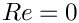 at the upstream end, which ensures that the film remains flat. At the downstream end, we add a line tension term that arises from use of the surface divergence theorem to integrate the contribution of the dynamic boundary condition. This term can be used to enforce contact angle conditions in a weak formulation, but here we simply add the term using the angle calculated from the current position of the free surface.
Global parameters and functions
The global parameters are the Reynolds number, the dimensionless grouping 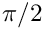, the angle of inclination of the slope  , the direction of the gravity vector and the capillary number
, the direction of the gravity vector and the capillary number  , which only influences the dynamics.
, which only influences the dynamics.
The hydrostatic pressure field is specified as an applied traction. At the outlet (inlet), the outer unit normal is in the positive (negative)  direction and so the required traction is given by 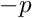 ( 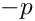),
direction and so the required traction is given by 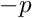 ( 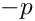),
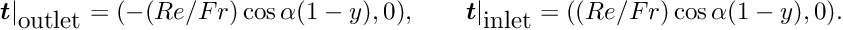
These tractions are specified by the two different functions
Note that G [ 1 ] is the component of the gravitational body force in the vertical direction, so 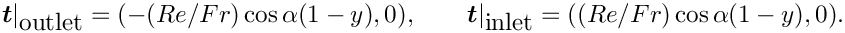.
We must also specify the direction of the normals (directed out of the fluid) to the notional walls that form the inlet and outlet and a contact angle of 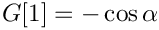 that will be used as a boundary condition on the free surface at the upstream end of the domain. In this case the normal to the inlet is in the negative x-direction and the normal to the outlet is in the positive x-direction. The actual value of the Wall_normal vector is set in main()
The driver code
We start by specifying the constitutive law used to define the mesh motion when pseudo-elastic deformation is used.
Next, the type of fluid element is chosen according to specified compiler flags
We then initialise the physical parameters, the Reynolds number and the direction of the gravitational body force, both based on the angle of inclination .
We also set the direction of the notional wall normal vector.
We now create the spine version of the problem, solve the steady problem, assign initial conditions by assuming that the problem has been at the steady state for all previous times, and then evolve the system in time.
Finally, exactly the same procedure is performed for the elastic problem
The mesh classes
The base mesh class is the SimpleRectangularQuadMesh: boundary 0 will be the wall; boundary 2 will be the free surface; and the remaining boundaries will be the inlet (3) and outlet (1). Below we shall demonstrate how to convert an existing mesh into a SpineMesh and ElasticMesh suitable for free-surface problems.
Creating the spine mesh
The SpineInclinedPlaneMesh inherits from the generic SimpleRectangularQuadMesh and adds vertical spines to the Nodes within the mesh in the constructor. Note that the resulting mesh is essentially the same as the SingleLayerSpineMesh, but has a somewhat simpler interface.
In addition, a spine_node_update() function must be provided that determines how the Nodes move as functions of the Spines.
Creating the ElasticMesh
The ElasticInclinedPlaneMesh inherits from the SimpleRectangularQuadMesh and the undeformed (reference) configuration is set to be the current position of the Nodes.
Note that the specification of the ElasticMesh is much simpler than that of a SpineMesh because no decision needs to be taken about how to describe the motion using Spines.
The problem classes
The generic problem
For ease of exposition, all generic functionality is included in the InclinedPlaneProblem class, which is templated by the bulk ELEMENT and the INTERFACE_ELEMENT. The class includes storage for the different sub-meshes: Bulk, the Traction elements associated with the inlet and outlet, the (free) Surface elements and the point elements associated with the ends of the interface. In addition, a string Output_prefix is used to distinguish between the output files from different formulations.
The time-dependent perturbation is introduced in the function actions_before_implicit_timestep(), which sets the vertical velocity on the wall (boundary 0)
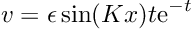
The function make_traction_elements() creates NavierStokesTractionElement s adjacent to the mesh boundaries 3 (the inlet) and 1 (the inlet). These elements are added to the Mesh Traction_mesh_pt, which is itself constructed in the function and pointers to the appropriate traction functions are assigned.
The function make_free_surface_elements() creates the appropriate INTERFACE_ELEMENTs adjacent to the free surface (boundary 2), sets the capillary number and also creates free-surface boundary elements at the left- and right-hand ends of the interface. If these "point" elements are not included then the surface tension is not applied correctly at the edges of the domain. The contact angle is set to be the value Inlet_Angle at the left-hand edge of the domain.
The function complete_build() assigns physical parameters to the fluid elements, sets the boundary conditions and assigns equation numbers.
Note that boundary conditions for the nodal positions in the pseudo-elastic formulation are specified by testing whether the Nodes are SolidNodes. In this case, the Nodes on the inlet and outlet boundaries are constrained to remain at the same horizontal position and the Nodes on the plane wall are fixed.
The function solve_steady() initialises the velocity of at all Nodes to the flat-film solution, solves the steady equations and writes the solution to a file.
Finally, the function timestep() takes a number of fixed timesteps writing vertical positions and the time to a trace file and writing the complete flow field to disk after a given number of timesteps.
The spine-based formulation
The class SpineInclinedPlaneProblem inherits from the generic InclinedPlaneProblem class and requires only minor modification. The constructor sets the string Output_prefix, builds a timestepper, builds the specific SpineMesh, creates the appropriate FaceElements, adds all sub-meshes to the Problem, builds the global mesh and then calls InclinedPlaneProblem::complete_build().
In a spine-based formulation, the nodal positions must be updated after every Newton step, which is achieved by overloading the function Problem::actions_before_newton_convergence_check()
We also specify a destructor to clean up memory allocated by the class.
The pseudo-solid-based formulation
The class ElasticInclinedPlaneProblem inherits from the generic InclinedPlaneProblem class and also requires only minor modification. The constructor sets the string Output_prefix, builds a timestepper, builds the specific SolidMesh, sets the constitutive law for the bulk elements, creates the appropriate FaceElements, adds all sub-meshes to the Problem, builds the global mesh and then calls InclinedPlaneProblem::complete_build()
In a pseudo-solid formulation, it is advantageous to reset the undeformed configuration after every timestep (an updated Lagrangian formulation). Hence, the Problem::actions_after_implicit_timestep() function is overloaded
We also specify a destructor to clean up memory allocated by the class.
Exercises
- Confirm that the steady solution agrees with the exact solution.
- Investigate what happens when the angle is varied. What happens when the angle is set to zero? What happens when the angle is set to 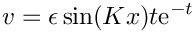?
- What happens if the hydrostatic pressure boundary conditions are not applied?
- How does the stability of the system to the perturbation change with angle,
 and
and  ? Are the results in agreement with the theoretical predictions?
? Are the results in agreement with the theoretical predictions? - Are the results independent of the length of the domain?
- Compare the spine-based and pseudo-elastic-based formulations? What is the same and what is different? Which method do you prefer?
Source files for this tutorial
- The source files for this tutorial are located in the directory:
demo_drivers/navier_stokes/inclined_plane/
- The driver code is:
demo_drivers/navier_stokes/inclined_plane/inclined_plane.cc
PDF file
A pdf version of this document is available.